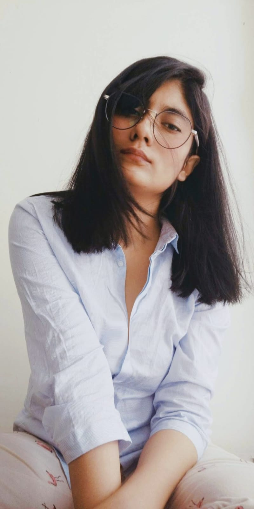

Face behind the Khidki
— The Artist —

Hi, I'm Saudamini
Painting emotions, one canvas at a time.
I'm a visual artist, trained architect, professional overthinker, and lifelong observer of small, emotional details. I make paintings that sit somewhere between memory and imagination. The kind that doesn't shout, but quietly stays with you.
My work is influenced by spaces, silence, human connection, and the invisible stories we carry but rarely say out loud.
Khidki (which means window) is how I see art: A gentle opening between inner worlds and outer spaces.
Sometimes I paint landscapes. My art for slow moments, thoughtful spaces, and hearts that feel a little too much. Sometimes I paint feelings disguised as rooms, hills, windows, or people standing still at just the wrong/right moment.
Artist by stubborn choice. Making quiet art for loud hearts. Powered almost entirely by chai. ☕
Art is not what you see, but what you make others see. Every brushstroke carries a piece of my soul, waiting to find its home in someone else's heart.